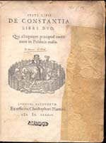
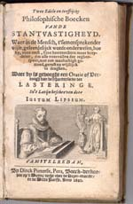
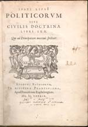
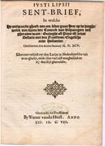
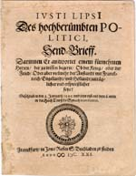
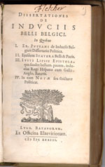

Justus Lipsius 1606 – 2006
Samenstelling: Jeanine de Landtsheer en A.Th. Bouwman
De webpresentatie behandelt de volgende onderwerpen:
8. Lipsius en de politieke theorie
In zijn politiektheoretische werken verbond Lipsius klassieke stoïsche ideeën met het christendom om zo een leidraad te bieden in zijn door godsdienstige en politieke conflicten gekenmerkte tijd. Zijn De constantia was met name gericht op het bereiken en handhaven van een persoonlijk evenwicht ook onder moeilijke omstandigheden. In zijn Politica analyseerde hij de politieke macht in het algemeen en de deugden die bij een vorst en diens raadgevers verondersteld mogen worden. Met name de prudentia of voorzichtigheid was voor een goed bestuur onontbeerlijk. In zijn beschouwing over de buitenlandse politiek van Spanje maande Lipsius tot vrede met Frankrijk en Engeland en tot een wapenstilstand tussen de strijdende partijen in de Nederlanden. Zijn ideeën over één godsdienst in de staat werden verworpen in het Noorden, maar waren de grondslag voor de wederopbouw van het Zuiden.
|
8.1 || J. Lipsius, De constantia libri duo. Qui alloquium
praecipue_ continent in publicis malis. Leiden: C. Plantijn,
1584. [765 B 22]. –– In De constantia behandelt Lipsius de vraag hoe de mens zich bij rampspoed staande kan houden. De editio princeps werd in Leiden gedrukt bij Plantijn (let op het titelvignet met afbeelding van de Hollandse Maagd in een omsloten tuin) maar opgedragen aan bestuur en inwoners van het benarde Antwerpen. Onder de titel noteerde hij ‘Postrema editio’ (Laatste uitgave) met het oog op een latere druk. |
|  |
8.2 || J. Lipsius, Twee edele en treffl_cke philosophische boecken vande stantvastigheyd. Waer in de mensch, t’samensprekenderw_se, geleerdel_ck wordt onderwesen, hoe hy ... s_ne hertztochten moet breydelen. Amsterdam: D.P. Pers, 1640. [731 F 12]. –– De constantia vond onmiddellijk grote weerklank in het door godsdienstige en staatkundige twisten verscheurde Europa. Al in 1584 verscheen een Nederlandse vertaling door Johannes Moretus. Bij deze latere druk werd het drukkersvignet vervangen door een portretje van de schrijvende Lipsius en Vrouwe Constantia met haar attributen: ze steekt haar rechterhand, met een zwaard, in het vuur en houdt met de linkerhand een zuil omklemd. |
|  |
|
8.3 || J. Lipsius, Politicorum sive civilis doctrinae libri sex.Leiden: F. Raphelengius, 1589. [759 C 75:1]. –– De Politica is een politiektheoretisch handboek voor vorsten. Ofschoon geheel samengesteld uit een aaneenrijging van citaten van klassieke auteurs was het werk binnen de contemporaine Europese context hoogst actueel. Het werd een bestseller maar lokte ook hevige kritiek uit, o.m. vanwege zijn pleidooi voor eenheid van godsdienst binnen één staat. Dit exemplaar stuurde Lipsius met dedicatie aan Marnix van St. Aldegonde. |
|  |
8.4 || J. Lipsius, Sent-Brief. In welcke hy antwoorde gheeft aen een seker groot Heer op de vraghe, welck van dryen den Coninck van Hispaengien best gheraden ware, Oorloghe oft Pays oft liever Bestant met den Fransman, Engelsche ende Hollander. Dusseldorf: W. vander Horst, 1598. [THYSPF 1419]. –– Vertaling van een Latijnse brief aan Francisco de San Víctores de la Portilla, gedateerd 2 januari 1595, waarin Lipsius zijn gedachten over de te voeren buitenlandse politiek van Spanje uiteenzet. |
|  |
|
8.5 || Send-Brieff, Darinnen er antwortet einem fürnehmen Herren, der zu wissen begerte, ob der Krieg, oder Fried, oder aber vielmehr der Anstandt mit Franckreich, Engellandt und Hollandt zuträglicher und erspriesslicher seye? Frankfurt: J. Rose, 1621. [180 B 18]. –– Het duurde niet lang of de Sendt-brief werd in heel Europa bekend. In de aanloop tot het Twaalfjarig Bestand verschenen er edities in het Frans, Latijn, Duits en Nederlands. De brief over een zo gevoelig politiek onderwerp kwam echter in omloop zonder toestemming van Lipsius, die zijn auteurschap dan ook eerst ontkende. |
|  |
|
8.6 || Dissertationes de induciis belli Belgici. Leiden: Off. Elzeviriorum, 1633. [199 F 3:1]. –– Na afloop van het Twaalfjarig Bestand werd de brief opnieuw actueel. In deze verzamelbundel met verhandelingen over de toenmalige strijd in de Nederlanden is de Latijnse versie van de Sendt-brief opgenomen (samen met een gelijkaardig geschrift van Puteanus, Lipsius’ opvolger in Leuven), voorzien van meer dan honderd bladzijden commentaar. |
|  |
| vorige pagina | volgende pagina |